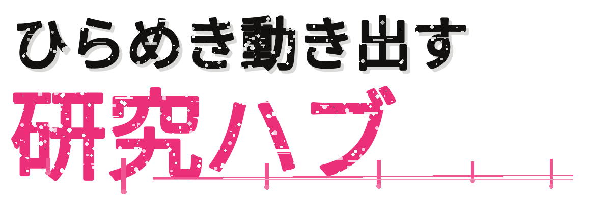
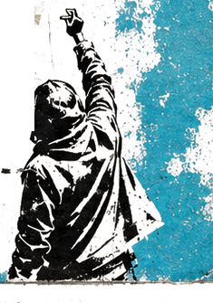

HOME
起動履歴、実行中ツール、注意事項、進行中プロジェクト、重要メモを実データで確認する入口。

つなぐ、試す、形にする。アイデアは、ここから世界を変える。

試して、壊して、また組み直す。
CURIOSITY IS
REBELLION.
Small steps.
Large impact.
よく使う操作を一発で。
ドラッグして並べ替え。クリックで中身を見る。
研究の現在地。
忘れたくない発見。
作った道具を、使える形で並べる。
カードをドラッグして、自分の使いやすい順へ並べ替えられます。
研究、装置、ツール、資料のつながりを見渡す。
研究プロジェクトごとに、関連するツール・資料・メモを一つの地図へまとめます。上のプロジェクトを切り替えると、その研究に必要な道具だけが表示されます。
考え、違和感、次の一手を貼っておく。
研究中に出たアイデア、違和感、次に確認することを保存します。メモは編集・削除・ピン留めでき、プロジェクトにも関連付けられます。
各ページの役割と、今できることを整理する。
研究用に作った複数のアプリを登録・起動し、研究プロジェクト、メモ、使用履歴を一つの入口から管理するためのハブです。
起動履歴、実行中ツール、注意事項、進行中プロジェクト、重要メモを実データで確認する入口。
アプリを登録・編集・起動する場所。今後作るアプリも「＋ TOOL」から追加できます。
研究テーマごとにツール、ファイル、フォルダー、成果物、メモをまとめ、実際の保存場所を開くページ。
アイデアや次に確認することを保存。横断検索、編集、削除、ピン留め、プロジェクト関連付けに対応。
表示設定、起動中アプリ、履歴、データ保存先、バックアップ、パス切れを管理。
できます。 ツール設定はEXE本体ではなくWindowsのユーザーデータ領域へ保存されます。新しいアプリ完成後に「＋ TOOL」でEXEやスクリプトを登録すれば、再ビルドせず追加できます。
見た目と動きも、研究道具の一部として調整する。
紙、カード、インクの反応を調整。
紙の質感と情報密度を調整。
ローカルアプリの登録、起動、履歴。
現在NEXUSから起動中のアプリはありません。
起動履歴はまだありません。
EXE化や更新後も設定を残す。
本体を更新したりEXE化しても、ツール登録・プロジェクト・メモは消えません。バックアップZIPから別PCへ復元できます。
DATA ROOT: CHECKING...設定はその場で反映される。